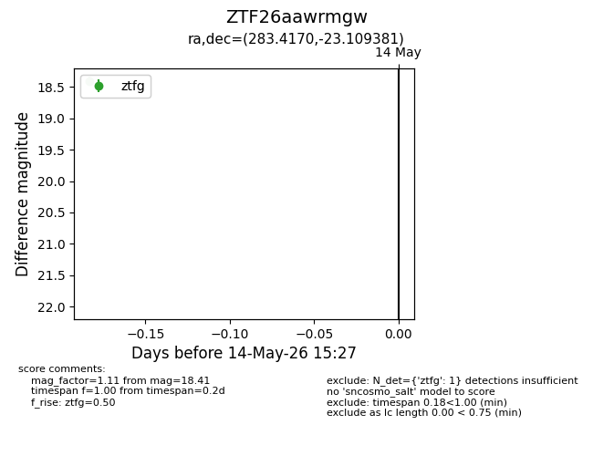
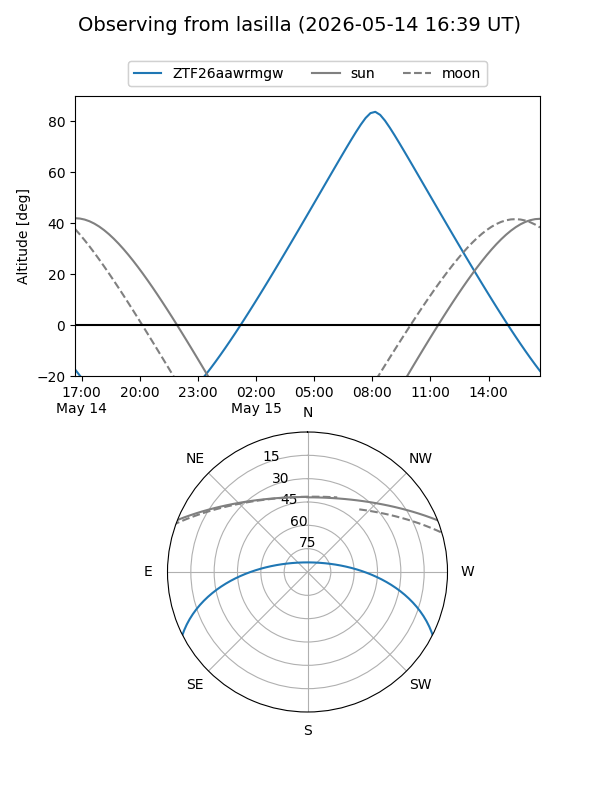
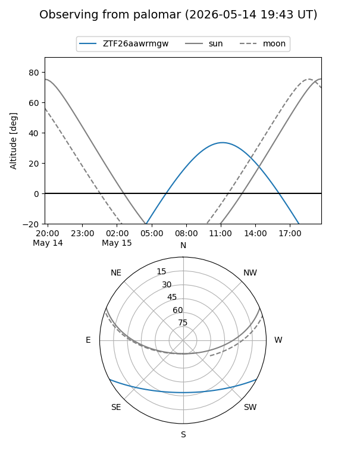

ZTF26aawrmgw
Target ZTF26aawrmgw at 2026-05-14 15:28
Aliases and brokers:
FINK: link
Lasair: link
ALeRCE: link
alt names
ZTF26aawrmgw (ztf,fink_ztf)
Coordinates:
equatorial (ra, dec) = 283.4170,-23.10938
equatorial (HMS+DMS) = 18:53:40.08,-23:06:33.77
galactic (l, b) = (12.3575,-10.77385)
Flags:
Photometry:
last ztfg=18.41
1 ztfg detections
Lightcurve

Visibility


Additional plots